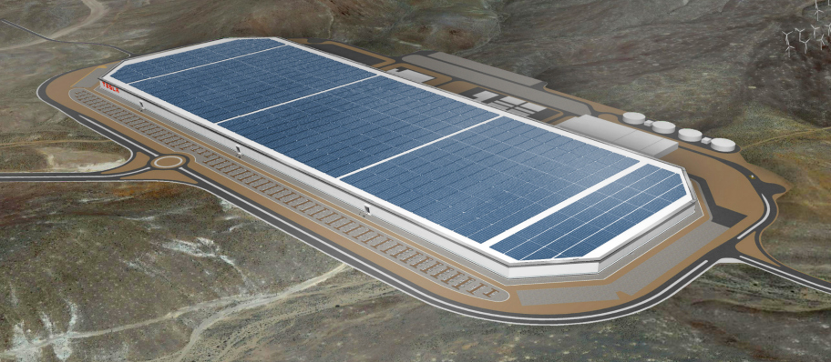

На илјадници години се користи на многу различни начини од луѓе ширум светот. Како и традиционалните човечки потреби за греење, готвење и сушење, денес се користи за производство на електрична енергија во случај кога нема други напојувања, како на пример во оддалечени места и во вселената. Станува поевтино да се произведува електрична енергија од сончева енергија и во многу ситуации таа сега е конкурентна со енергија од јаглен или нафта. Соларен шпорет може да се користи за готвење храна.
По минува низ атмосферата на Земјата, поголемиот дел од енергијата на Сонцето е во форма на видлива светлина и зрачење на инфрацрвено светло. Растенијата ја претвораат енергијата на сончева светлина во хемиска енергија (шеќери и скроб) преку процесот на фотосинтеза. Луѓето редовно ја користат оваа продавница за енергија на разни начини, како кога содржат дрво или фосилни горива, или кога едноставно јадат растенија, риби и животни. Соларното зрачење ја достигнува Земјината атмосфера на Земјата со моќност од 1366 W / m2. Во моментов панели на соларни ќелии конвертираат, во најдобар случај, околу 15% од сончевата светлина што ги погодува во електрична енергија.
Соларните панели добиваат енергија од сонцето за луѓето да ги користат. Постојат два типа на соларни панели, оние кои собираат топлина (топлинска) и оние кои произведуваат електрична енергија (фотоволтаични). Топлината од сончевите панели често се користи за греење на просторот и за топла вода. Соларни панели собираат обновлива енергија. Во 20 век некои ја користеле топлината на сонцето за да направат пареа за парниот мотор да го претворат генераторот. Денеска произведуваат струја од сончевата светлина е поевтино. Ова е солиден начин на производство на струја, што значи дека нема подвижни делови.